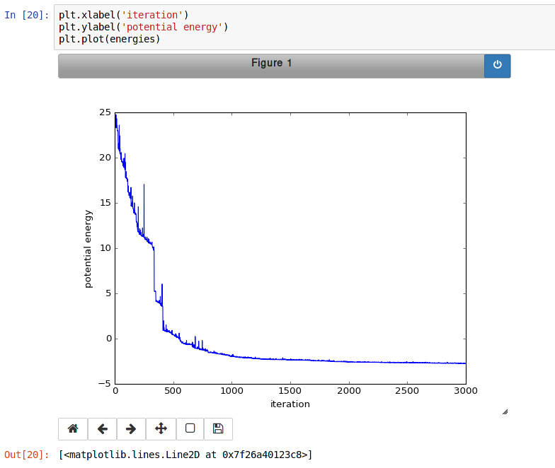

8.6.3. PyLammps Tutorial¶
Contents
Overview¶
PyLammps is a Python wrapper class for LAMMPS which can be created
on its own or use an existing lammps Python object. It creates a simpler,
more “pythonic” interface to common LAMMPS functionality, in contrast to
the lammps wrapper for the C-style LAMMPS library interface which
is written using Python ctypes. The lammps wrapper
is discussed on the Use Python with LAMMPS doc page.
Unlike the flat ctypes interface, PyLammps exposes a discoverable
API. It no longer requires knowledge of the underlying C++ code
implementation. Finally, the IPyLammps wrapper builds on top of
PyLammps and adds some additional features for
IPython integration into Jupyter notebooks,
e.g. for embedded visualization output from dump style image.
Comparison of lammps and PyLammps interfaces¶
lammps.lammps¶
uses
ctypesdirect memory access to native C++ data
provides functions to send and receive data to LAMMPS
requires knowledge of how LAMMPS internally works (C pointers, etc)
lammps.PyLammps¶
higher-level abstraction built on top of original ctypes interface
manipulation of Python objects
communication with LAMMPS is hidden from API user
shorter, more concise Python
better IPython integration, designed for quick prototyping
Quick Start¶
System-wide Installation¶
Step 2: Installing the LAMMPS Python package¶
PyLammps is part of the lammps Python package. To install it simply install that package into your current Python installation with:
make install-python
Note
Recompiling the shared library requires re-installing the Python package
Installation inside of a virtualenv¶
You can use virtualenv to create a custom Python environment specifically tuned for your workflow.
Benefits of using a virtualenv¶
isolation of your system Python installation from your development installation
installation can happen in your user directory without root access (useful for HPC clusters)
installing packages through pip allows you to get newer versions of packages than e.g., through apt-get or yum package managers (and without root access)
you can even install specific old versions of a package if necessary
Prerequisite (e.g. on Ubuntu)
apt-get install python-virtualenv
Creating a virtualenv with lammps installed¶
# create virtualenv named 'testing'
virtualenv $HOME/python/testing
# activate 'testing' environment
source $HOME/python/testing/bin/activate
Now configure and compile the LAMMPS shared library as outlined above. When using CMake and the shared library has already been build, you need to re-run CMake to update the location of the python executable to the location in the virtual environment with:
cmake . -DPYTHON_EXECUTABLE=$(which python)
# install LAMMPS package in virtualenv
(testing) make install-python
# install other useful packages
(testing) pip install matplotlib jupyter mpi4py
...
# return to original shell
(testing) deactivate
Creating a new instance of PyLammps¶
To create a PyLammps object you need to first import the class from the lammps module. By using the default constructor, a new lammps instance is created.
from lammps import PyLammps
L = PyLammps()
You can also initialize PyLammps on top of this existing lammps object:
from lammps import lammps, PyLammps
lmp = lammps()
L = PyLammps(ptr=lmp)
Commands¶
Sending a LAMMPS command with the existing library interfaces is done using the command method of the lammps object instance.
For instance, let’s take the following LAMMPS command:
region box block 0 10 0 5 -0.5 0.5
In the original interface this command can be executed with the following Python code if L was a lammps instance:
L.command("region box block 0 10 0 5 -0.5 0.5")
With the PyLammps interface, any command can be split up into arbitrary parts separated by white-space, passed as individual arguments to a region method.
L.region("box block", 0, 10, 0, 5, -0.5, 0.5)
Note that each parameter is set as Python literal floating-point number. In the PyLammps interface, each command takes an arbitrary parameter list and transparently merges it to a single command string, separating individual parameters by white-space.
The benefit of this approach is avoiding redundant command calls and easier parameterization. In the original interface parameterization needed to be done manually by creating formatted strings.
L.command("region box block %f %f %f %f %f %f" % (xlo, xhi, ylo, yhi, zlo, zhi))
In contrast, methods of PyLammps accept parameters directly and will convert them automatically to a final command string.
L.region("box block", xlo, xhi, ylo, yhi, zlo, zhi)
System state¶
In addition to dispatching commands directly through the PyLammps object, it also provides several properties which allow you to query the system state.
- L.system
Is a dictionary describing the system such as the bounding box or number of atoms
- L.system.xlo, L.system.xhi
bounding box limits along x-axis
- L.system.ylo, L.system.yhi
bounding box limits along y-axis
- L.system.zlo, L.system.zhi
bounding box limits along z-axis
- L.communication
configuration of communication subsystem, such as the number of threads or processors
- L.communication.nthreads
number of threads used by each LAMMPS process
- L.communication.nprocs
number of MPI processes used by LAMMPS
- L.fixes
List of fixes in the current system
- L.computes
List of active computes in the current system
- L.dump
List of active dumps in the current system
- L.groups
List of groups present in the current system
Working with LAMMPS variables¶
LAMMPS variables can be both defined and accessed via the PyLammps interface.
To define a variable you can use the variable command:
L.variable("a index 2")
A dictionary of all variables is returned by L.variables
you can access an individual variable by retrieving a variable object from the L.variables dictionary by name
a = L.variables['a']
The variable value can then be easily read and written by accessing the value property of this object.
print(a.value)
a.value = 4
Retrieving the value of an arbitrary LAMMPS expressions¶
LAMMPS expressions can be immediately evaluated by using the eval method. The passed string parameter can be any expression containing global thermo values, variables, compute or fix data.
result = L.eval("ke") # kinetic energy
result = L.eval("pe") # potential energy
result = L.eval("v_t/2.0")
Accessing atom data¶
All atoms in the current simulation can be accessed by using the L.atoms list. Each element of this list is an object which exposes its properties (id, type, position, velocity, force, etc.).
# access first atom
L.atoms[0].id
L.atoms[0].type
# access second atom
L.atoms[1].position
L.atoms[1].velocity
L.atoms[1].force
Some properties can also be used to set:
# set position in 2D simulation
L.atoms[0].position = (1.0, 0.0)
# set position in 3D simulation
L.atoms[0].position = (1.0, 0.0, 1.)
Evaluating thermo data¶
Each simulation run usually produces thermo output based on system state, computes, fixes or variables. The trajectories of these values can be queried after a run via the L.runs list. This list contains a growing list of run data. The first element is the output of the first run, the second element that of the second run.
L.run(1000)
L.runs[0] # data of first 1000 time steps
L.run(1000)
L.runs[1] # data of second 1000 time steps
Each run contains a dictionary of all trajectories. Each trajectory is accessible through its thermo name:
L.runs[0].thermo.Step # list of time steps in first run
L.runs[0].thermo.Ke # list of kinetic energy values in first run
Together with matplotlib plotting data out of LAMMPS becomes simple:
import matplotlib.plot as plt
steps = L.runs[0].thermo.Step
ke = L.runs[0].thermo.Ke
plt.plot(steps, ke)
Error handling with PyLammps¶
Compiling the shared library with C++ exception support provides a better error handling experience. Without exceptions the LAMMPS code will terminate the current Python process with an error message. C++ exceptions allow capturing them on the C++ side and rethrowing them on the Python side. This way you can handle LAMMPS errors through the Python exception handling mechanism.
Warning
Capturing a LAMMPS exception in Python can still mean that the current LAMMPS process is in an illegal state and must be terminated. It is advised to save your data and terminate the Python instance as quickly as possible.
Using PyLammps in IPython notebooks and Jupyter¶
If the LAMMPS Python package is installed for the same Python interpreter as IPython, you can use PyLammps directly inside of an IPython notebook inside of Jupyter. Jupyter is a powerful integrated development environment (IDE) for many dynamic languages like Python, Julia and others, which operates inside of any web browser. Besides auto-completion and syntax highlighting it allows you to create formatted documents using Markup, mathematical formulas, graphics and animations intermixed with executable Python code. It is a great format for tutorials and showcasing your latest research.
To launch an instance of Jupyter simply run the following command inside your Python environment (this assumes you followed the Quick Start instructions):
jupyter notebook
IPyLammps Examples¶
Examples of IPython notebooks can be found in the python/examples/pylammps sub-directory. To open these notebooks launch jupyter notebook inside this directory and navigate to one of them. If you compiled and installed a LAMMPS shared library with exceptions, PNG, JPEG and FFMPEG support you should be able to rerun all of these notebooks.
Validating a dihedral potential¶
This example showcases how an IPython Notebook can be used to compare a simple LAMMPS simulation of a harmonic dihedral potential to its analytical solution. Four atoms are placed in the simulation and the dihedral potential is applied on them using a datafile. Then one of the atoms is rotated along the central axis by setting its position from Python, which changes the dihedral angle.
phi = [d \* math.pi / 180 for d in range(360)]
pos = [(1.0, math.cos(p), math.sin(p)) for p in phi]
pe = []
for p in pos:
L.atoms[3].position = p
L.run(0)
pe.append(L.eval("pe"))
By evaluating the potential energy for each position we can verify that trajectory with the analytical formula. To compare both solutions, we plot both trajectories over each other using matplotlib, which embeds the generated plot inside the IPython notebook.

Running a Monte Carlo relaxation¶
This second example shows how to use PyLammps to create a 2D Monte Carlo Relaxation simulation, computing and plotting energy terms and even embedding video output.
Initially, a 2D system is created in a state with minimal energy.

It is then disordered by moving each atom by a random delta.
random.seed(27848)
deltaperturb = 0.2
for i in range(L.system.natoms):
x, y = L.atoms[i].position
dx = deltaperturb \* random.uniform(-1, 1)
dy = deltaperturb \* random.uniform(-1, 1)
L.atoms[i].position = (x+dx, y+dy)
L.run(0)
Finally, the Monte Carlo algorithm is implemented in Python. It continuously moves random atoms by a random delta and only accepts certain moves.
estart = L.eval("pe")
elast = estart
naccept = 0
energies = [estart]
niterations = 3000
deltamove = 0.1
kT = 0.05
natoms = L.system.natoms
for i in range(niterations):
iatom = random.randrange(0, natoms)
current_atom = L.atoms[iatom]
x0, y0 = current_atom.position
dx = deltamove \* random.uniform(-1, 1)
dy = deltamove \* random.uniform(-1, 1)
current_atom.position = (x0+dx, y0+dy)
L.run(1, "pre no post no")
e = L.eval("pe")
energies.append(e)
if e <= elast:
naccept += 1
elast = e
elif random.random() <= math.exp(natoms\*(elast-e)/kT):
naccept += 1
elast = e
else:
current_atom.position = (x0, y0)
The energies of each iteration are collected in a Python list and finally plotted using matplotlib.
The IPython notebook also shows how to use dump commands and embed video files inside of the IPython notebook.
Using PyLammps and mpi4py (Experimental)¶
PyLammps can be run in parallel using mpi4py. This python package can be installed using
pip install mpi4py
The following is a short example which reads in an existing LAMMPS input file and executes it in parallel. You can find in.melt in the examples/melt folder.
from mpi4py import MPI
from lammps import PyLammps
L = PyLammps()
L.file("in.melt")
if MPI.COMM_WORLD.rank == 0:
print("Potential energy: ", L.eval("pe"))
MPI.Finalize()
To run this script (melt.py) in parallel using 4 MPI processes we invoke the following mpirun command:
mpirun -np 4 python melt.py
Warning
Any command must be executed by all MPI processes. However, evaluations and querying the system state is only available on rank 0.
Feedback and Contributing¶
If you find this Python interface useful, please feel free to provide feedback and ideas on how to improve it to Richard Berger (richard.berger@temple.edu). We also want to encourage people to write tutorial style IPython notebooks showcasing LAMMPS usage and maybe their latest research results.